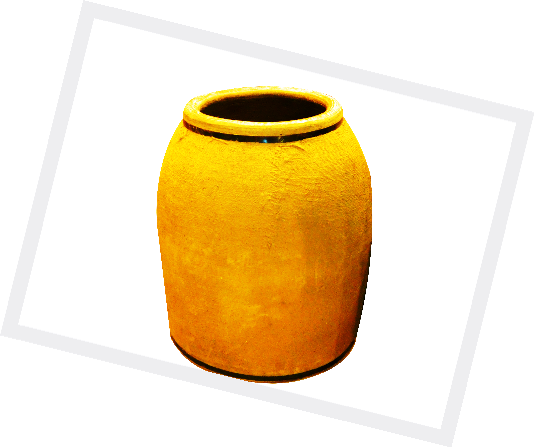

Introduction
Ram Chander & Sons We are delivering our services in hotels & kitchens form since 1952 years. We are very experienced in hand crafted Clay Pots which is very important part of Tandoors. We got this gift from generation by generation and develop flexible design that are Long-lasting and easy to use. We work flexibly with clients to fulfill their needs and adjustable size. Whether you need to create by materials and functional around you equipment whether you are looking for, Ram Chander & Sons are confident you will be pleased with the results.
We offer the following product & services:

- Clay Tandoors
- Tandoors Repairing/Fitting
- Clay Pots
- Gas Tandoors
- Pizza Ovens
- Stainless Steel Tandoors
- Copper Tandoors
- Drum Tandoors
- Mild Steel(Iron) Tandoors
- Catering Tandoors
- Taper Tandoors
- Barrel Shape Tandoors
- Wall Fitting
- seekhdi
- barbecue
- Home Tandoors
- Manufacturing & Export
- Quality Ensure
- All kind of accessories like Skews,Rings,Pads..etc
About Us
Before you choose us to take on your Consignment you will probably want to know a bit more about us, so meet the team:
Ram Chander & Sons is more than fifty year old name in the field of manufacturing and exporting Tandoors and the leading tandoor manufacture from India. We are in tandoor's business for last three generations. In such a long time we have adopted such an innovative approach so that our customer gets more of compatibility and easy handling with our products. These innovations help us to produce better quality product at competitive price. Late sh. Ram chander was the founder of this company. who devoted his life in building Tandoor. In their professional career Mr. Ram chander went to U.S.A., OMAN, SRI LANKA, MASCOUT, PARIS, FRANCE and many other country. Late sh. Ram chander was the founder of this company. who devoted his life in building Tandoor .....read more